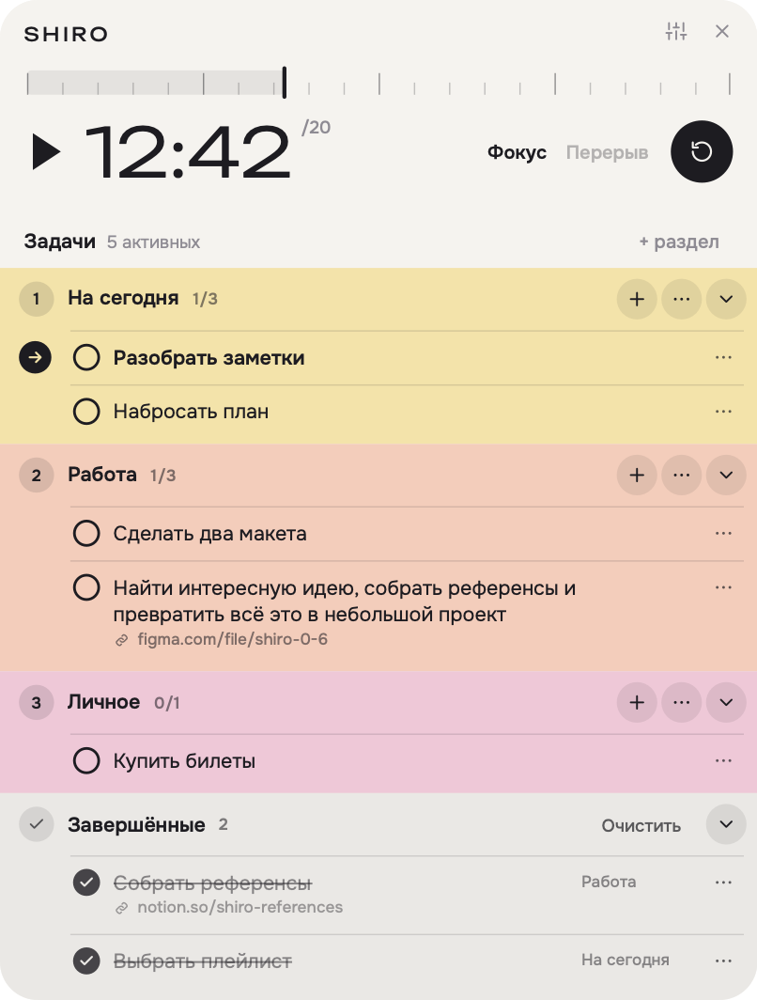
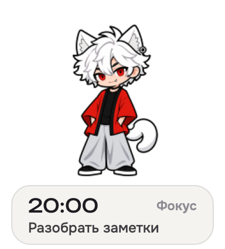
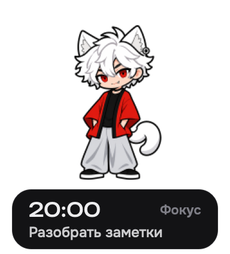
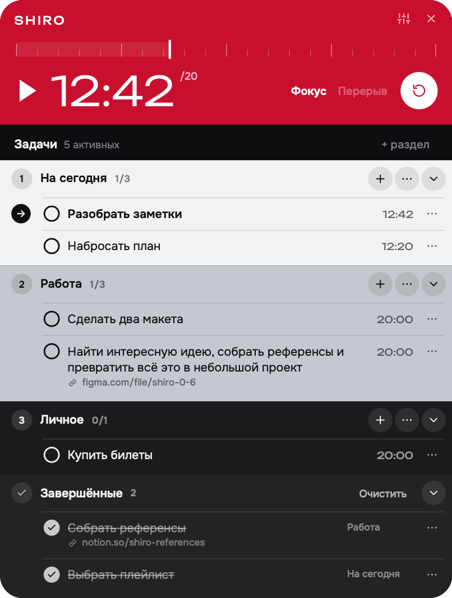
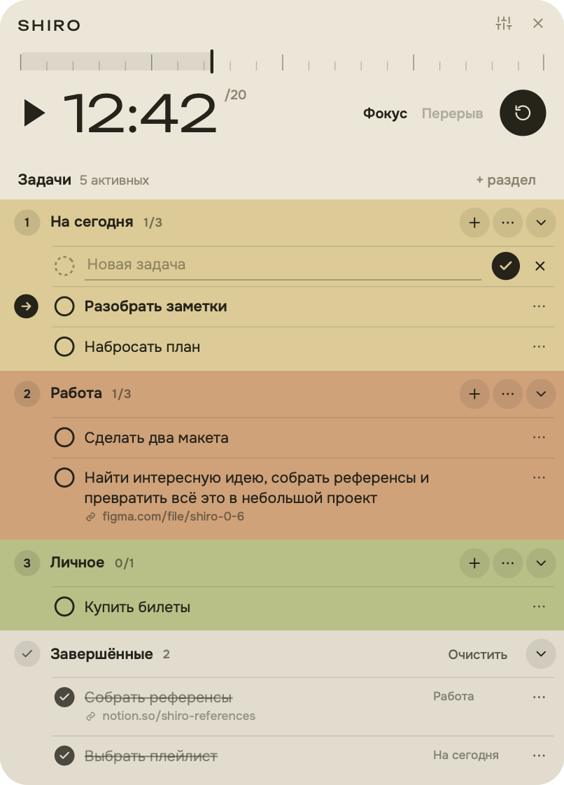
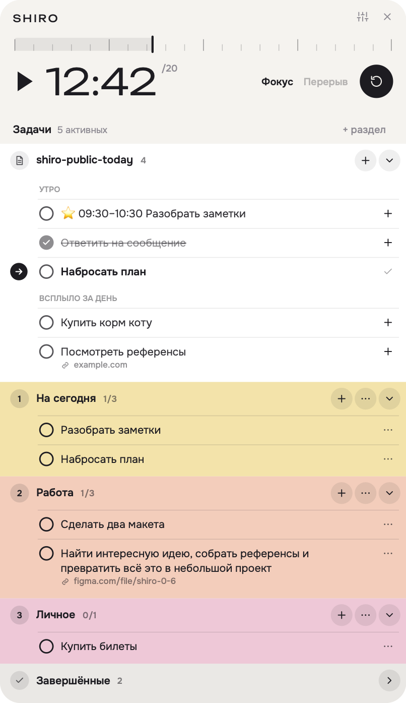
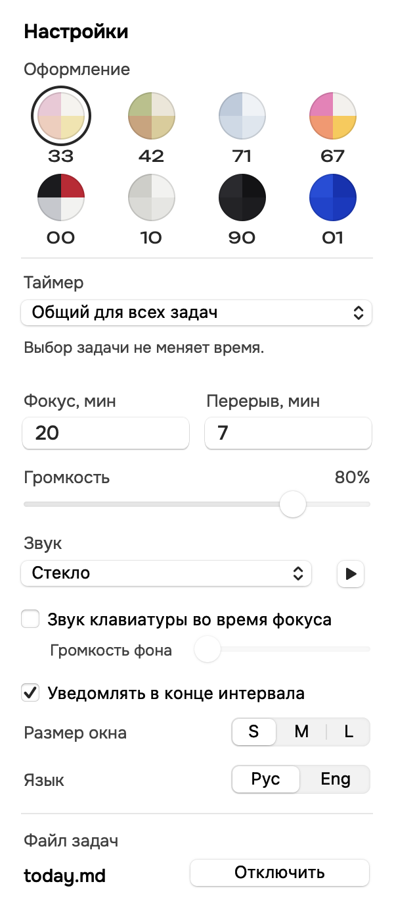

да, это еще один помодоро‑таймер
+ задачник + прикольчики
macOS 12 и новее · Windows 10 и 11
хочешь накинуть на вентилятор?
пиши сюда — @it_sounds_silly ↗
Какой у тебя Mac, видно в меню Apple → «Об этом Mac», строка «Чип» или «Процессор». Вся инструкция одним файлом: Shiro-guide.md.



Что внутри
Таймер, списки и компания на рабочем столе. Посмотри, как всё устроено.
Время по твоим правилам
Выбери, сколько работать и сколько отдыхать, и нажми ▶. Оставшееся время видно и в окне, и на маленькой плашке под Широ — окно с задачами можно закрыть.
- Работа и отдыхДлину обоих интервалов можно менять в настройках.
- ПаузаМожно отвлечься и продолжить с того же места.
- Общий или личныйОдин таймер на всё или своё оставшееся время у каждой задачи.
- Когда время вышлоШиро подаст сигнал. Следующий интервал запускаешь ты.

Разложить всё по полочкам
Собери свои разделы: работа, личное, проекты, список на потом. Названия и порядок — какие тебе удобно.
- Быстро записатьДобавляй задачи подряд, редактируй двойным кликом и прикрепляй ссылки.
- ПереставитьДвигай задачи и целые разделы мышкой. Длинные названия переносятся на новую строку.
- Взять в работуВыбери текущую задачу — её название появится под Широ.
- Закрыть и вернутьГотовое уходит в «Завершённые». Оттуда можно вернуть задачу или удалить её навсегда.

Задачи из файла
.md, например из ObsidianУже ведёшь список в Obsidian? Подключи свой .md-файл в настройках, и его задачи появятся в Широ. Можно работать прямо с ними или перенести нужное в свои разделы.
Как должен выглядеть файл
# Понедельник ← заголовок пропускается ## Утро ← группа в блоке - [ ] ⭐ 09:30–10:30 Разобрать почту - [x] Ответить про макет ← зачёркнута - [ ] Посмотреть [референсы](https://…) ## Всплыло за день ← сюда Широ дописывает ## Итог дня ← не показывается
Из Широ можно добавить задачу в файл или отметить готовую:
- + в шапке блокадописывает строку
- [ ] текств «## Всплыло за день», а если такого раздела нет, в первый. - Кружокменяет
[ ]на[x]и обратно в строке этой задачи.
Задачу из файла можно сделать текущей, скопировать в свои разделы, переставить внутри блока или передвинуть весь блок. Этот порядок хранится только в Широ. Любые изменения в файле подхватываются автоматически через пару секунд — в том числе если заменить файл новым по тому же пути. Ссылки вида [[Заметка]] открываются прямо в Obsidian.

Как реагирует Широ
5 состоянийКак в нулевых, Широ тусуется на твоём рабочем столе поверх всех окон — если прям сильно мешает, сворачивай ПКМ, но тогда велик риск пропустить все глупи анимации.
На паузе и в перерыве Широ спокойно стоит.
Под ним — время и текущая задача. Длинное название один раз пробегает строкой, когда ты открываешь окно или запускаешь таймер.
Никто не остановит вас от создания своего маскота и кастомного набора реакций. Я даже буду рада — принесите и мне ♡
Оформление
8 схемУ каждой схемы свой номер. Нажми на кружок, чтобы посмотреть окно в этой схеме.
33 пастель, схема по умолчанию
Схема меняет и окно, и плашку под Широ. Язык интерфейса переключается между русским и английским, названия задач остаются как есть.
Настройки
значок с ползунками в углу окна- Оформлениевосемь схем: 33, 42, 71, 67, 00, 10, 90, 01.
- Таймеробщий для всех задач или свой у каждой.
- Фокус и перерывдлина в минутах: фокус до 180, перерыв до 60.
- Звукнаборы «Стекло», «Дерево», «Воздух» и громкость. ▶ даёт послушать.
- Звук клавиатурытихий стук клавиш, пока идёт фокус, со своей громкостью. На паузе и в перерыве плавно затихает.
- Уведомлениясистемное уведомление в конце интервала. Клик по нему открывает окно.
- Размер окнаS, M или L.
- ЯзыкРус или Eng.
- Файл задачподключить или отключить .md-файл.


Установка на Mac
macOS 12+- Скачай архив для своего Mac и распакуй его.
- Перенеси
Широ.appв «Программы». - Открой
Широ.app. Когда Mac спросит про уведомления, нажми «Разрешить».
Если macOS пишет, что не может проверить файл, нажми «Готово», затем открой «Системные настройки» → «Конфиденциальность и безопасность» и внизу нажми «Всё равно открыть». Так бывает, потому что сборка подписана без платного сертификата Apple. Отключать защиту системы не нужно.
Установка на Windows
10 и 11, 64-бит- Распакуй архив в обычную папку. Из архива не запускай.
- Запусти
Shiro.exe. Ставить .NET отдельно не нужно. - Сердечко Широ появится рядом с часами. Если его не видно, оно прячется под стрелкой ^, его можно перетащить на панель.
Если Windows пишет «Система Windows защитила ваш компьютер», нажми «Подробнее» → «Выполнить в любом случае». У программы нет платной подписи издателя. Версия для Windows новая и ещё не проверена на настоящем компьютере, поэтому особенно жду замечаний.
Клавиши
- Enter сохранить, в новой задаче ещё и открыть следующую строку
- Esc отменить ввод или закрыть окно
- ⌘V ⌘C ⌘X ⌘A ⌘Z работают на любой раскладке, на Windows с Ctrl
- двойной клик переименовывает задачу или раздел
Где хранятся данные
- Всё остаётся на твоём компьютере и сохраняется само.
- Mac: настройки macOS под именем
local.shiro.pomodoro. - Windows:
%LOCALAPPDATA%\Shiro\state.json.
Если что-то не так
- Пропал Широ: меню у сердечка → «Показать Широ» или запусти приложение ещё раз.
- Нет звука: проверь громкость в настройках Широ и в системе.
- Файл не подхватывается: задачи в нём должны быть записаны как
- [ ] текст.